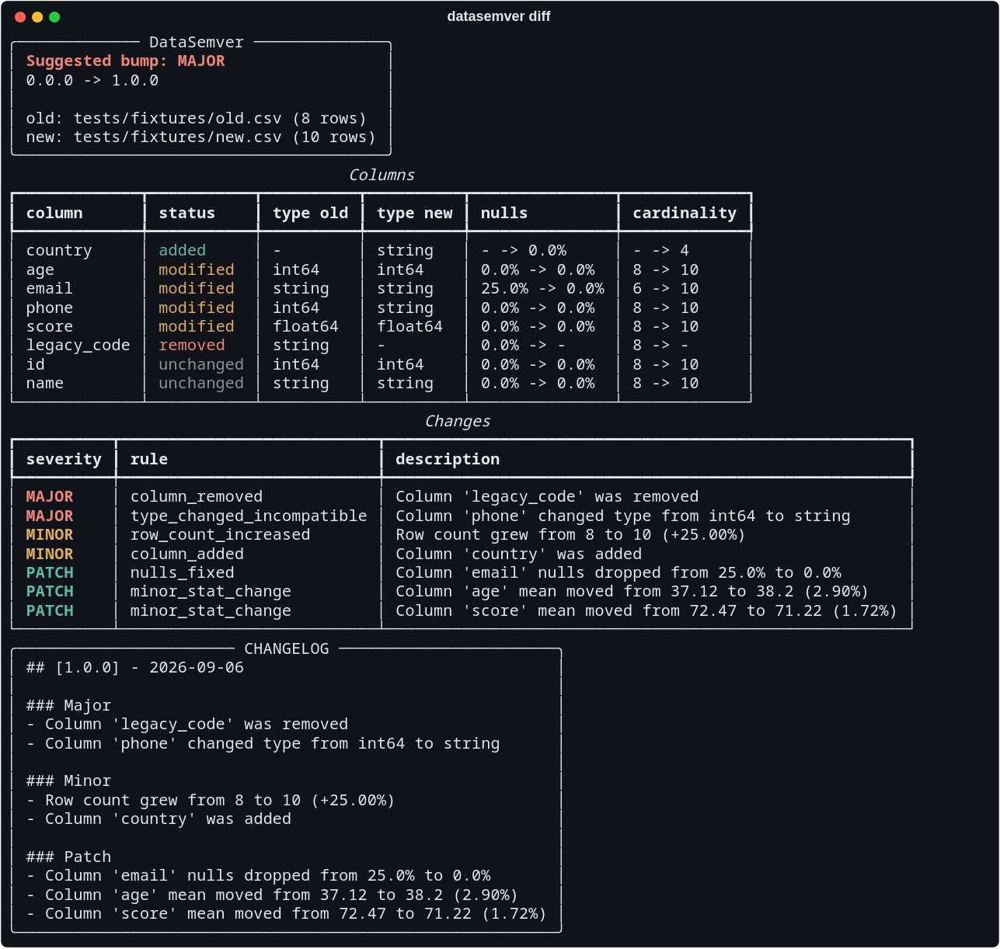
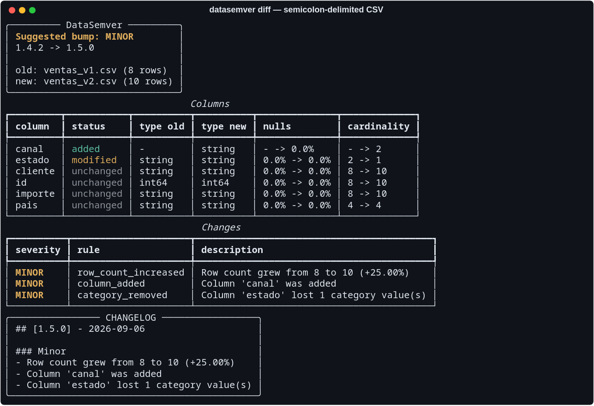
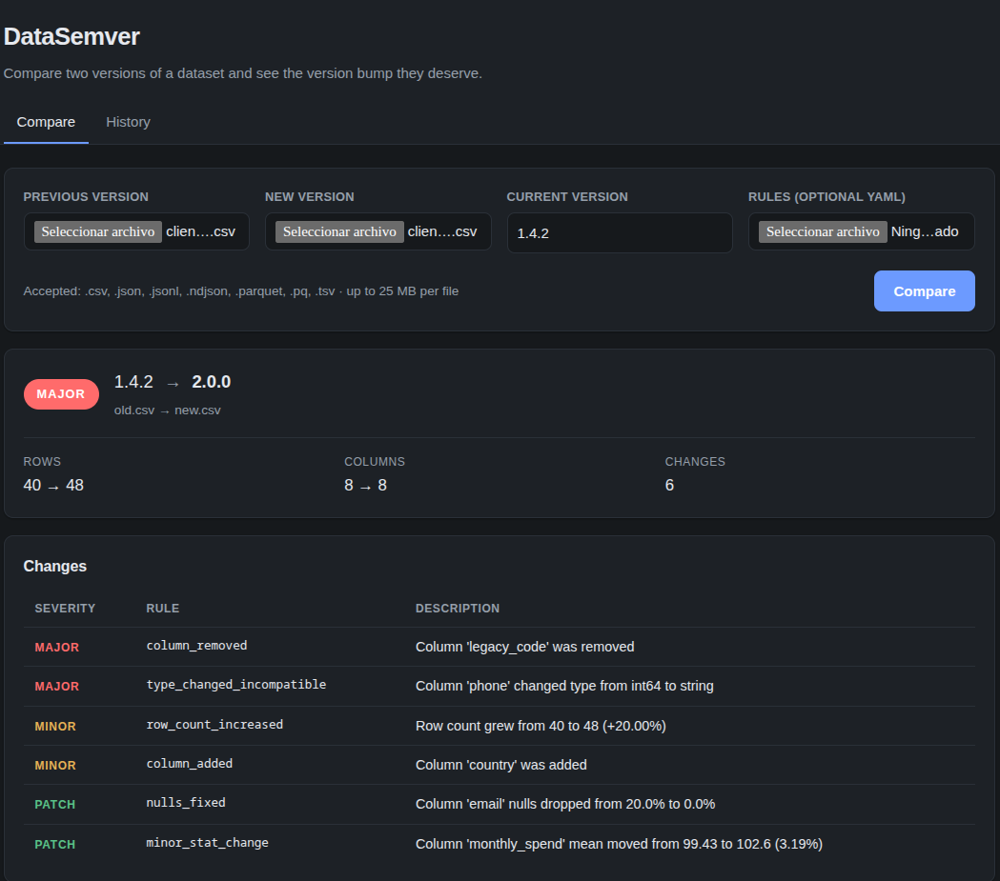

Versionado semántico para datasets
DataSemver compara dos versiones de un dataset, clasifica cada diferencia que encuentra y responde con el salto que merecen — y con la entrada de changelog que lo explica.
Qué ha cambiado
int64 a string
El salto es la severidad más alta encontrada. Dos cambios rompen aquello de lo que ya dependen los consumidores, así que el resto no puede suavizarlo.
majorUna columna eliminada, un teléfono que se convirtió en cadena, una distribución que se desplazó en silencio. Todo eso rompe a quien está aguas abajo, y todo eso suele publicarse como «se actualizó el dataset». DataSemver hace ese impacto explícito y revisable, para que publicar un dataset se discuta como se discute publicar una librería.
Cada diferencia se contrasta contra una regla, y cada regla lleva una severidad. El salto es la severidad más alta encontrada entre todas. Lo que ninguna regla cubre se reporta como no clasificado y nunca infla el resultado.
Algo de lo que ya dependen los consumidores ha desaparecido o ha cambiado de significado.
Hay más de lo que había, y nada de lo que estaba se ha movido.
El dataset dice lo que ya decía, con menos huecos o menos ruido.
La severidad es propiedad de tu fichero de reglas, no del cambio. Las reglas por defecto son una opinión; junto a ellas viajan perfiles estricto y permisivo, y el catálogo completo (en inglés) lista cada regla, métrica y umbral.
El comando imprime el salto, la comparación de columnas y los cambios clasificados, y
después la entrada de changelog. No escribe nada salvo que se lo pidas con
--output.

int64 convertido en string hacen de
esto una versión que rompe. La entrada de changelog sale con ella.


Las cuatro devuelven el mismo informe.
datasemver diff old.csv new.csv, y --json cuando un script necesita leer la respuesta.
pip install datasemver
analyze() para dos rutas, analyze_schemas() para dataframes que ya tienes en memoria.
from datasemver import analyze
Sube dos ficheros o elige dos versiones de un directorio. Es una herramienta local sin autenticación: mantenla en loopback.
pip install "datasemver[web]"
Analiza los datasets que toca un pull request y publica el salto sugerido como comentario, reescrito en cada push.
scripts/run_datasemver_on_pr.py
# el salto, listo para un script de release BUMP=$(datasemver diff old.csv new.csv --json | jq -r '.bump') # la entrada de changelog, antepuesta a un fichero que tú mantienes datasemver diff old.csv new.csv --current-version "$(cat VERSION)" --output CHANGELOG.md
Python 3.10 o superior. El paquete se distribuye tipado, y las releases se publican desde CI mediante Trusted Publishing con procedencia firmada — no existe ningún token de larga duración.